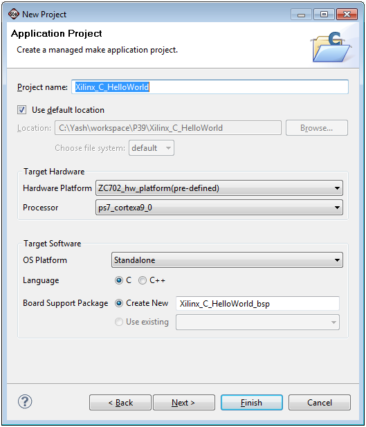
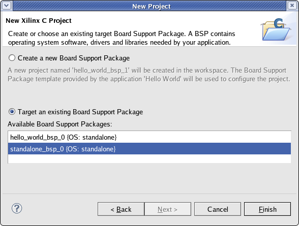

Creating a C or C++ Project
You can create a C or C++ application project by using New Application Project wizard. By default, these are managed make projects - SDK creates and maintains make files for you.
To create a project:
- Click File > New > Application Project. Note that this is equivalent to clicking on File > New > Project to open the New Project wizard, selecting Xilinx > Application Project and clicking on Next.
- The New Application Project dialog box appears.

- In the Project Name field, type a name for the new project if you do not want to use the default value.
- Select the location for the project. To use the default location as displayed in the Location field, leave the
Use default location check box selected. Otherwise, click to unselect the check box, then type or browse
to the directory location.
- Select the Hardware Specification XML file if it was not specified earlier.
- From the Processor drop-down list, select the processor for which you want to build the application.
- SDK provides useful sample applications listed in Select Project Template that you can use to create your
project. The Description box displays a brief description of the selected sample application. When you use a
sample application for your project, SDK creates the required source and header files and linker script.
To create a blank project select the Empty Application. You can then add C files to the project.
- Click Next.
- In the next page, New Xilinx C Project, you can choose to Create a new Board Support package or Target an existing Board Support Package for which you want to create the application from the list of available platforms.

- Click Finish to create your application project and board support package (if it does not exist).
Next, you might want to define your project properties. For more information, refer to the Help topic C/C++ Development User
Guide > Reference > C/C++ Properties.
The procedure for creating a managed C++ software application is similar to the C application creation procedure described here.
Select a Xilinx C++ Project, then continue with the wizard as described.
Note: Xilinx recommends that you use Managed Make flow rather than Standard Make C/C++ unless you are
comfortable working with make files.

SDK application projects

Creating software projects

New Xilinx C Application Project dialog box
C/C++ Views
Copyright © 1995-2013 Xilinx, Inc. All rights reserved.